01
万年历 · 农历 · 节气
公历、农历、节气与宜忌同屏呈现，日程和节日倒数一起照看重要的日子。
点击放大 ↗ CALENDAR / LUNAR日历照看每一天，热搜汇聚新鲜事，右键承包文件工作流，桌面机器人陪你等 AI 完成任务。小咕把生活与效率，放到你伸手就能碰到的地方。
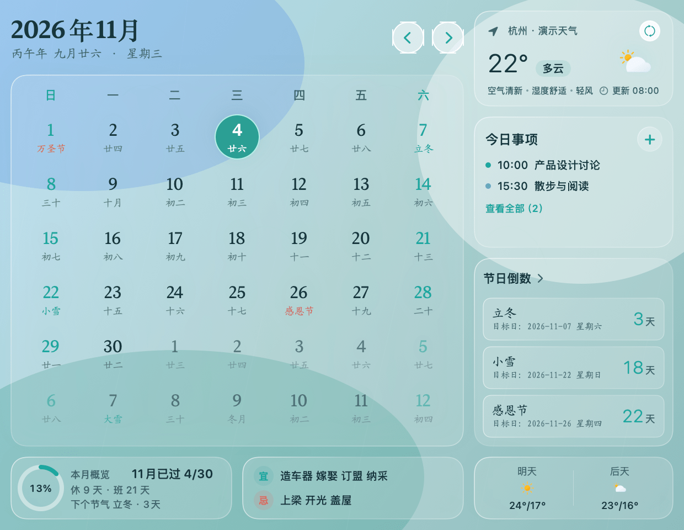
从时间到专注，从灵感到文件。小咕把高频的小事收拢在一块安静的桌面上。
公历、农历、节气与宜忌同屏呈现，日程和节日倒数一起照看重要的日子。
点击放大 ↗ CALENDAR / LUNAR喝水、打卡、吃药、活动，给重复的小事一个轻巧的节奏。支持间隔提醒和稍后提醒。
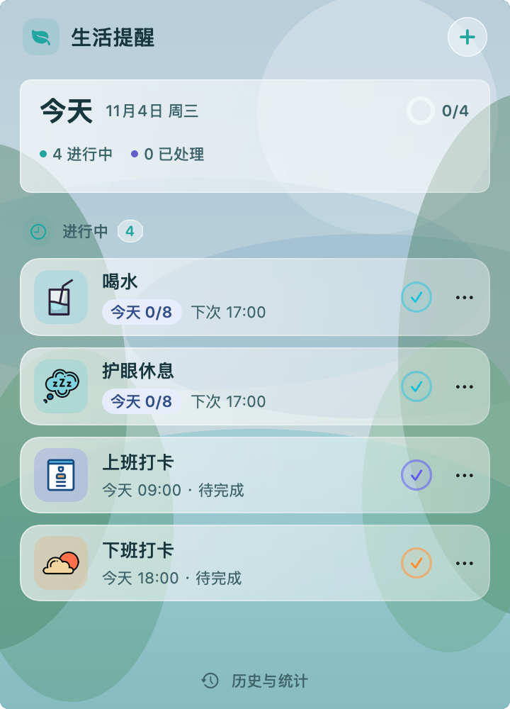
点击放大 ↗ LIFE REMINDER当前体感、空气质量和未来几天，跟着日历一起出现。换一套主题，天气也融入新的桌面风格。
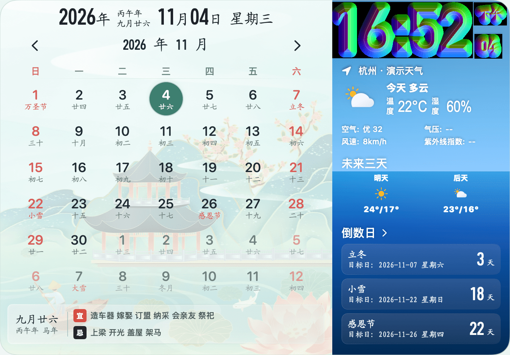
点击放大 ↗ WEATHER / FORECAST截图、二维码、格式化、文本对比、图片压缩、字体预览……常用能力随手可用。
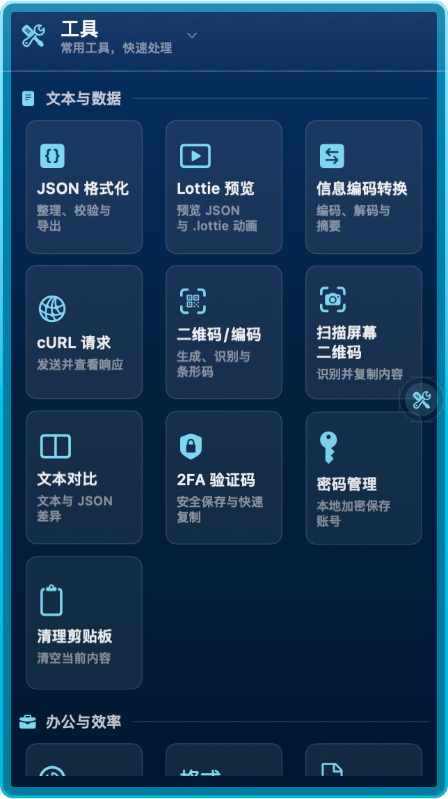
点击放大 ↗ EVERYDAY TOOLS收藏常用应用、文件和脚本，找回复制过的内容，再把自己的文件工作流接入右键。
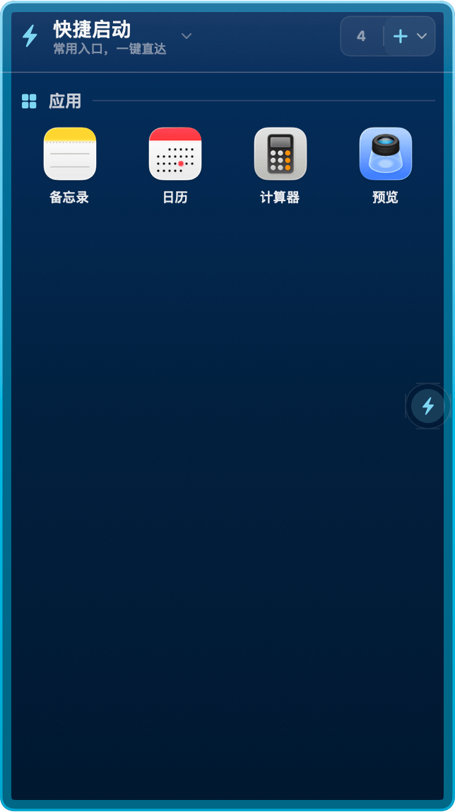
点击放大 ↗ QUICK LAUNCH / FINDER点一点、摸摸头，让机器人回应你。连接 AI 工具后，还能跟随任务切换表情、显示状态提示。
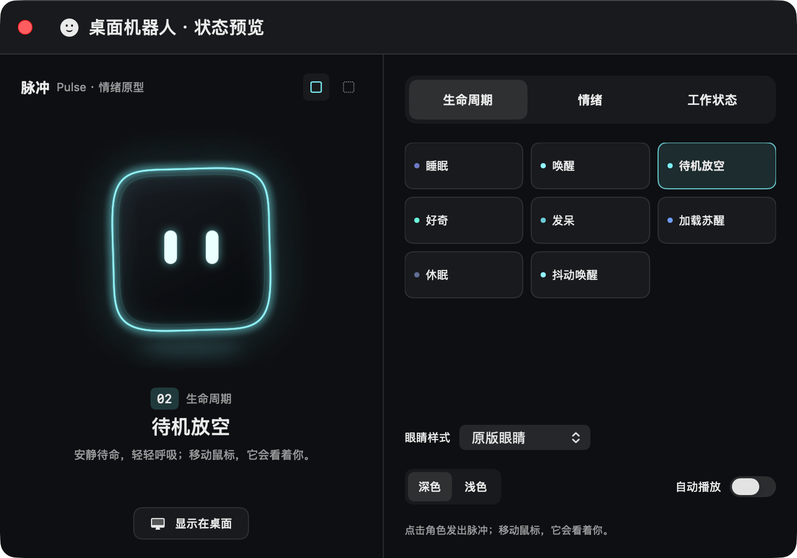
点击放大 ↗ DESKTOP COMPANION微博、百度、知乎等多平台热搜，聚在菜单栏的一扇小窗里。工作间隙看一眼，快速了解大家正在关注什么。
微博、百度、知乎、今日头条、哔哩哔哩等来源随手切换。可选择显示的来源、拖动调整顺序，让关注的内容排在前面。
在「最热」和「实时」之间切换，浏览热门话题或资讯更新。点击标题打开详情，应用内阅读还可开启网页暗黑模式。
手动刷新或设置后台抓取间隔，按需开启热搜更新通知。切换平台时可跟随来源变色，也可保持统一深色背景。
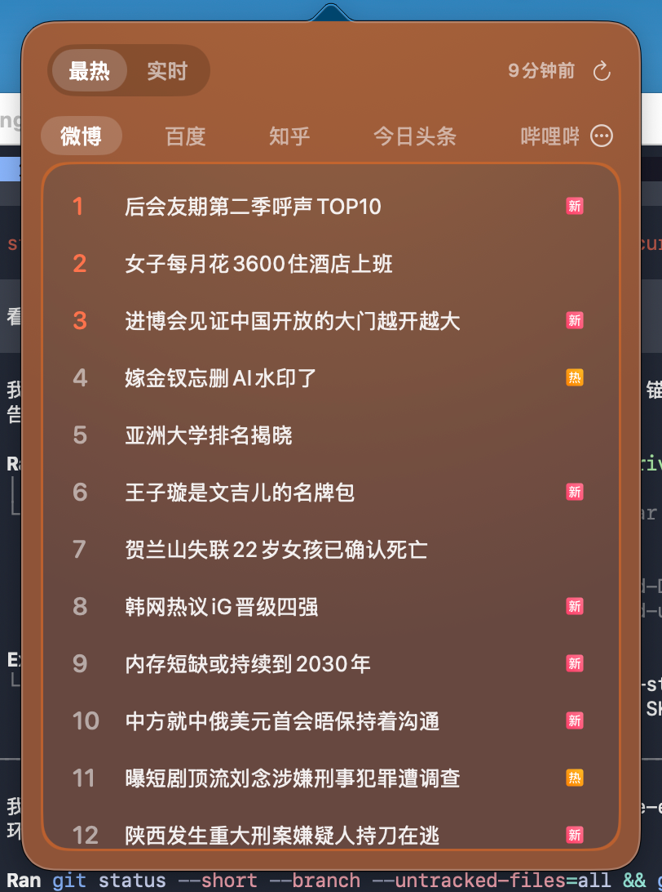
点击放大 ↗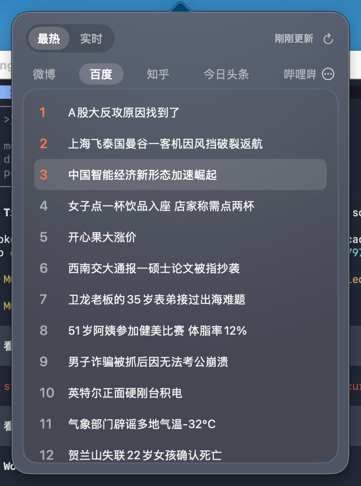
点击放大 ↗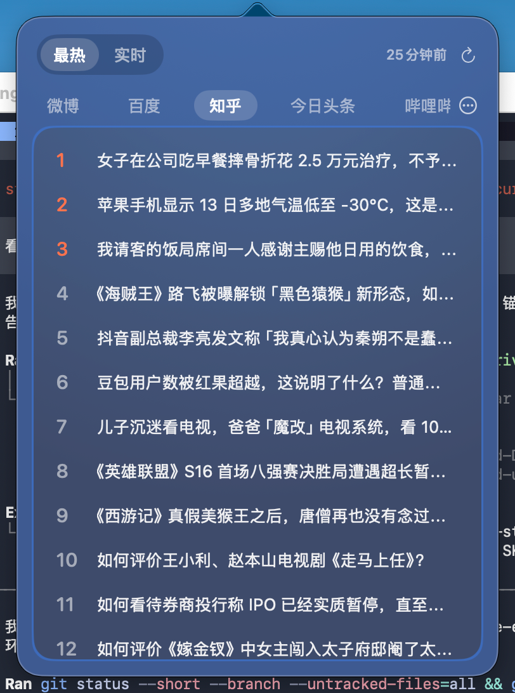
点击放大 ↗从打开项目、传文件，到带参数跑脚本。常用操作、开发工具和自己的自动化，都能在当前目录直接接上。
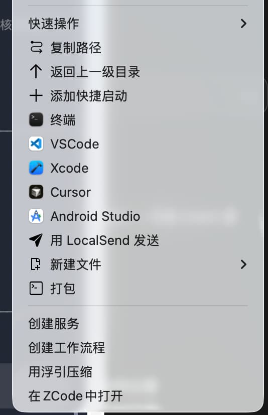
点击放大 ↗高频操作随手用，复杂流程自己定。
复制单个或多个路径、返回上一级、新建文件、添加快捷启动，还能把选中的文件交给 LocalSend 发送。操作围着当前文件展开。
用配置好的应用打开文件夹或文本文件，接上终端、编辑器和 IDE。常用目录与开发路径也能做成自己的菜单动作。
支持 Shell、Python、Node.js 和 AppleScript，也能触发系统或指定应用的快捷键。内嵌命令、引用脚本文件或复制脚本，由你选择。
为动作配置文本输入、单选、默认值和必填项。执行时填写这一次需要的参数，同一个动作便能应对不同任务。
选择终端自动执行或后台执行，按需查看运行输出。重要动作可开启运行前确认，动作也可限制在指定目录及其子目录显示。
内置常用位置、开发者和 Git 动作模板。导入后可编辑、分组、改图标、排序或停用，自定义动作与分组支持 JSON 导入导出。
会看你、会歪头、会打瞌睡，也会跟随 AI 任务切换表情。桌角的一点微光，让忙碌、等待和片刻休息都有了模样。
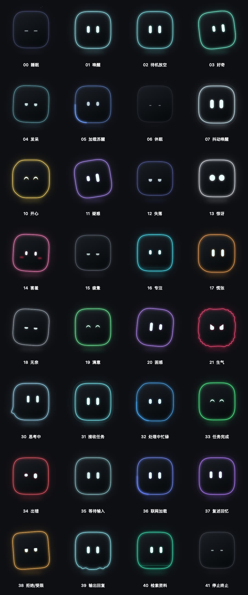
查看 32 种状态 ↗睡眠时灯光渐暗，开心时弯起眼睛，思考时亮起脉冲，完成响应时泛起绿色波纹。每一种状态都有自己的眼神、动作与轮廓光效。
单击唤醒或回应，双击随机表演、讲笑话或来碗毒鸡汤。支持摸头、拖动和摇晃互动，位置可以随手调整。
可跟随时间作息，在空闲时发呆、休息或打瞌睡。想专心时，让它“安静待着”；想放松时，点播一段笑话，气泡会分段讲给你听。
连接已支持的 AI 工具后，机器人能跟随接收任务、处理中、响应结束，以及来源可提供的错误或提问等待状态。多会话汇总，让你少来回切窗口看进度。
需先授权日志目录、配置 Hook 或连接服务；可识别的状态随来源而异。完成表情表示本轮响应结束。
互动结束会回到当前任务表情。新任务、错误或等待处理会更新提示，忙碌时偶尔给你一句回应，安静模式也不会遮住需要关注的任务。
机器人之外，还有苍蝇、蟑螂和蜘蛛。分别调整数量、设置苍蝇的飞行速度，点击还会让它们跑开。给熟悉的桌面添一点意想不到的动静，喜欢安静就随时关闭。
实际桌面截图 · 用户提供73 张实际界面与组件采集图，加上 6 张用户补充图片，包含微博、百度和知乎热搜。界面采集使用演示数据，组件为生产代码渲染；点击可放大查看。